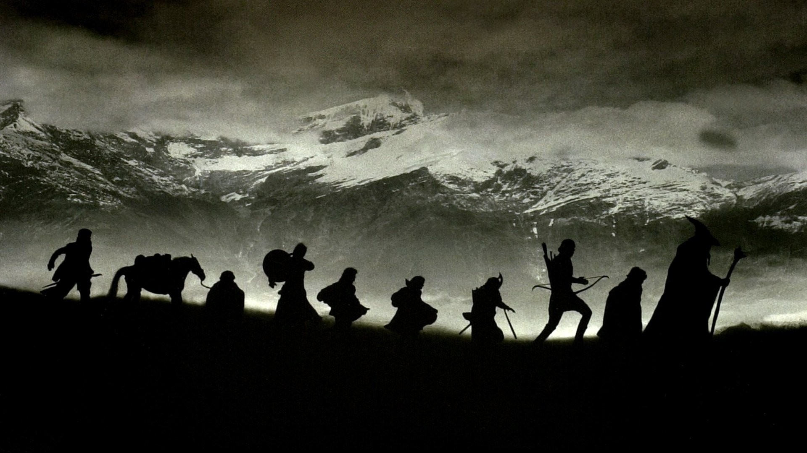

Journey of The Grey Pilgrim
“All we have to decide is what to do with the time that is given us.”
"Gandalf was shorter in stature than the other two; but his long white hair, his sweeping silver beard, and his broad shoulders, made him look like some wise king of ancient legend. In his aged face under great snowy brows his eyes were set like coals that could suddenly burst into fire."
Gandalf was one of the five Istari sent to Middle-earth by the Valar in the Third Age. In Valinor he was known as Olórin. Gandalf was instrumental in bringing about the demise of Sauron in T.A. 3019, chiefly by encouraging others and dispensing his wisdom at pivotal times. Gandalf was originally robed in grey, and second to Saruman in the Order of wizards. After his fall in Moria, Gandalf returned to Middle-earth as head of the Order, robed in white. Gandalf was noteworthy for his keen interest in Hobbits.
The wisest of the Maiar, Gandalf was created by Ilúvatar before the Music of the Ainur.[4] At the beginning of Time, he was amongst the Ainur who entered into Eä.[5] In his "youth" he was known as Olórin and became one of the Maiar who served Manwë, Varda, Irmo and Nienna named. He was associated with light and fire, much like his peer Varda.[6] Yet his ways often took him to Nienna, from whom he learned pity and patience. He loved the Elves but he walked unseen among them, or wore a fana that appeared like an Elf, and sent them fair visions in their hearts that made them wiser. Throughout his existence, he followed the example of Nienna, he took pity on the sorrows of the Children of Ilúvatar and drove those who listened to him out of despair.[6] During the Third Age, while Sauron's 'dark spirit of malice' was increasing over Middle-earth, the Valar chose five emissaries from among the Maiar to go and help the peoples. Manwë selected Olórin, who, at first, did not wish to go, as he feared Sauron. However, Manwë said that that was all the more reason why he should go.[7] Furthermore, the One Ring, the location of much of Sauron's power, presumably still existed somewhere in Middle-earth. Olórin submitted to the will of Manwë, and departed Valinor to Mithlond in the year T.A. 1000.[7] He arrived after the others, Curumo, Aiwendil, Pallando, and Alatar, at about the same time the Necromancer appeared in Mirkwood.